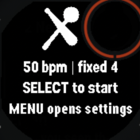
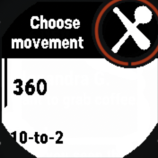
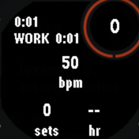
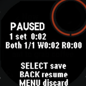

Feel the tempo
A drift-resistant 5–240 BPM metronome that also calls the bulava combo: a pulse on each movement change, a double pulse to switch hands.
Garmin Connect IQ · Steel mace · Indian clubs · Bulava
A wrist-first training companion that keeps your swings on tempo, calls traditional sequences, counts your swings in timed challenges, and records each movement block while you stay in motion.

No crowded dashboards. Just the cues and context that matter when both hands are on the mace: tempo, work, recovery, movement, side, and a clean Garmin activity when you finish.
A drift-resistant 5–240 BPM metronome that also calls the bulava combo: a pulse on each movement change, a double pulse to switch hands.
SELECT moves Free training between work and recorded recovery, and the rest menu switches movement or side for the next set.
Each implement offers its own canon — 360s and 10-to-2s, mills and casts, or the bulava combo — and the summary tallies your left/right balance.
Five or ten minutes of continuous mace swinging, scored live from wrist rotation by the gyroscope-primary counter and saved with every set.
Your last twenty sessions stay on the wrist: browse them from Settings, scroll the per-set Rhythm Score, and see the last comparable score before you start.
An optional per-set record of wrist motion — exposure, peak, active seconds, and weight-volume — kept as transparent measurements, not a single invented score.



Runs on 120 Connect IQ watches. Swing counting is validated on the Instinct 3 Solar 45 mm. Everything above behaves the same on all of them. Swing counting is the exception — its detector is tuned against labelled recordings from that one watch and its 25 Hz gyroscope. Elsewhere it still runs, falling back to the accelerometer where there is no gyroscope, but the counts have not been checked against known-correct numbers. Contributing a recording from your own watch is what changes that.
Choose your implement and movement, then free training, an interval preset, or a timed challenge — set your tempo and start swinging. Mace & Clubs owns the movement-block record while Garmin records the activity.
| Button | Before | Training | Paused |
|---|---|---|---|
| SELECT | Start workout | Work ↔ rest | Save & exit |
| BACK | Quit | Pause | Resume |
| UP / DOWN | Choose preset | Tempo ±5 BPM | Browse sets |
| MENU | Settings | Rest: move & side · else discard | Discard safely |
Keep learning
Explore training, education, and equipment from organisations working across mace, gada, mudgar, and Indian club traditions.
Open source
Mace & Clubs is MIT-licensed and built in the open. Download the latest release or compile it with the Garmin Connect IQ SDK — it runs on 120 Connect IQ watches.
git clone https://github.com/serroba/mace-clubs.git cd mace-clubs make build # with the Connect IQ simulator running monkeydo bin/mace-clubs.prg instinct3solar45mm
Don't own the right watch, or don't code? You can still help tune swing counting — contribute a recording of your own workout and a bot validates it automatically. See CONTRIBUTING.md for the details.